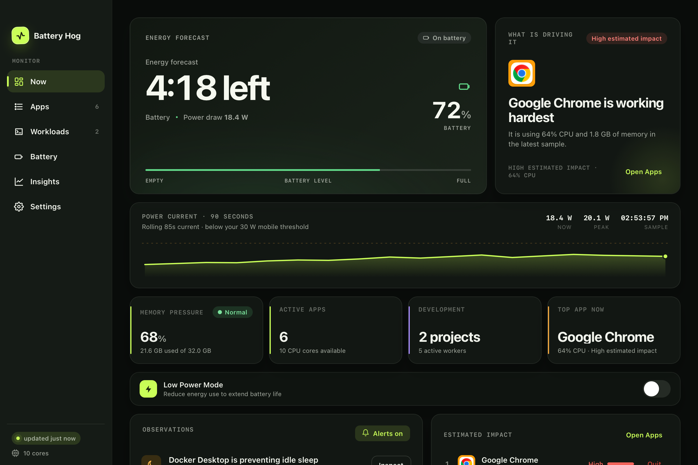

See the current
Watch the Mac’s total battery-side power draw and a rolling 90-second trace instead of guessing from percentage alone.
Battery Hog shows what is draining your MacBook—from Chrome to the builds, dev servers, and coding agents behind it—then gives you a practical next action.
Your Mac is heating up—likely Atlas compiler workers. Chrome is also contributing.
Watch the Mac’s total battery-side power draw and a rolling 90-second trace instead of guessing from percentage alone.
Trace compilers, tests, dev servers, and coding-agent descendants back to the project workload they belong to.
Open the likely workload, quit an app, release a sleep blocker, or coordinate the heavy command you actually control.
Battery Hog connects battery runway, active apps, development processes, sleep assertions, and thermal state without turning your menu bar into a cockpit.
See system-wide live watts, battery level, forecast, drain history, and recent peaks in one place.
Recognized Node, Rust, Gradle, CocoaPods, test, scan, compiler, and dev-server activity is grouped using command, ancestry, and working-directory signals.
Opt-in alerts use Apple’s supported thermal-state API plus recent CPU and workload history to suggest a likely contributor after sustained pressure.
Surface long-running idle-sleep assertions, suspicious display timeouts, wake history, and practical fixes.
Opt-in gated commands can share heavy-job lanes on battery. Ungated agents and processes are never silently intercepted, paused, or killed.
These captures use the current v1.5.0 interface with deterministic sample workloads—no private project names, browsing history, or live system profile.

A live battery investigation at a glance.
macOS does not expose a clean, exact watt meter for every app. Battery Hog keeps the Mac’s measured total power draw separate from its ranked app and workload signals.
Heat Watch does not claim to hear your fans or prove a single cause. It observes macOS thermal pressure and explains what was recently working hardest.
Use the tool that matches the question you are asking.
| Question | Battery Hog | Activity Monitor | General system monitors |
|---|---|---|---|
| What is my total live power draw? | Front and center | Energy-impact view | Often available |
| Which project owns these compiler workers? | Grouped workloads | Manual process hunt | Usually process-first |
| Why did thermal pressure just rise? | Recent likely contributors | Separate investigation | Varies by tool |
| What is blocking idle sleep? | Action-oriented warning | Preventing Sleep column | Varies by tool |
| Do I need broad sensor telemetry? | Focused battery view | Built-in basics | Usually the better fit |
No. Live watts describe the whole Mac. App and process rows are ranked separately using live CPU, memory, and context signals. Battery Hog deliberately avoids labeling those estimates as per-app watts.
No. Heat Watch observes Apple-supported macOS thermal states. After sustained pressure, it checks recent CPU and workload history and suggests likely contributors. That is useful context, not proof of a single cause.
Monitoring and analysis stay on-device. There is no account or analytics. A direct-download install contacts GitHub only when you manually check for an update or opt into periodic checks, which are off by default. Homebrew installations stay Homebrew-managed.
No. Agent Mode only coordinates commands deliberately launched through the gate shown in Battery Hog. On AC, gated commands pass through unchanged. Ungated work is never silently intercepted, paused, or killed.
The current release supports Apple Silicon Macs running macOS 11 or later. Version 1.5 uses a native Swift monitoring engine with a WebKit dashboard—there is no Python runtime or local HTTP server.
Activity Monitor is excellent for inspecting processes and energy impact. Battery Hog earns its place when you want those signals connected to live whole-Mac power, project-level development workloads, sleep blockers, charge history, and thermal context.
Download the signed and notarized DMG, or inspect every line first. If Battery Hog saves you a hunt, starring the repo helps another Mac user find it.